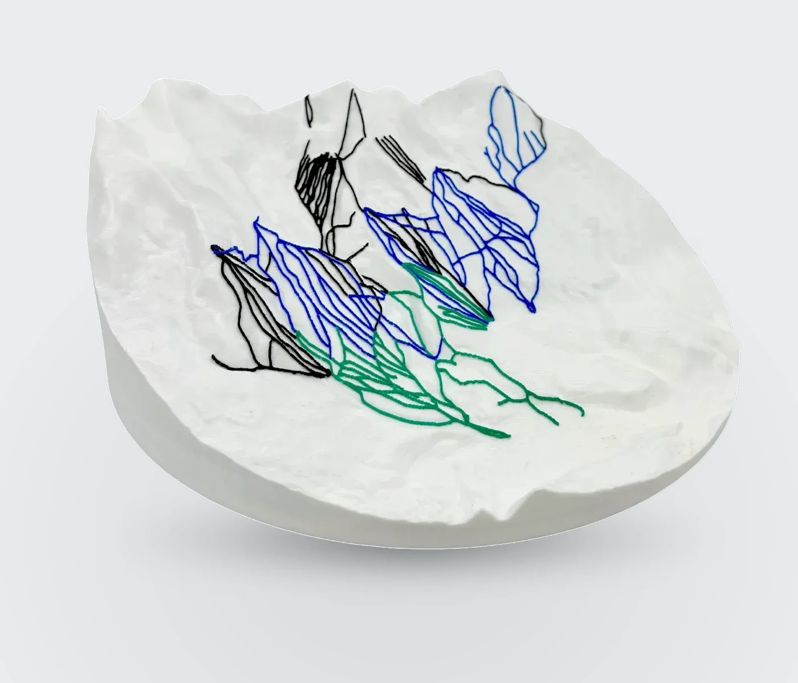
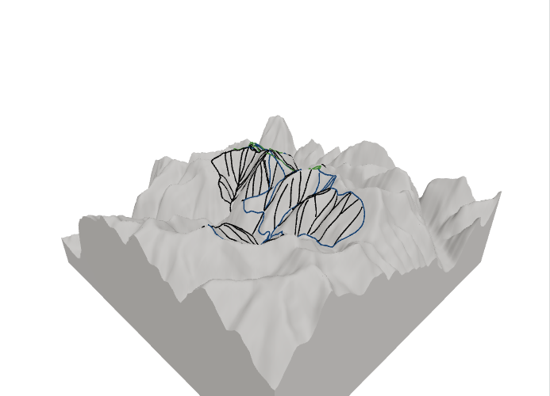

Monte
Live DTC Brand · Premium 3D Trail Maps
Monte is a live direct-to-consumer brand at monte3d.com, selling premium 3D-printed topographic maps of ski resorts and mountain bike trail systems — an operating product with a full e-commerce stack, not a portfolio demo.

Platform & Pipeline
Storefront, GIS automation, and print-ready production
Full-Stack Storefront
Next.js 14 / TypeScript / Tailwind storefront with live 3D terrain preview (Three.js / react-three-fiber) driven by OpenTopography elevation data, plus a pre-generation terrain cache for U.S. resorts so buyers can inspect the product before purchase.
GIS Pipeline
Automated Python (geopandas / GDAL) replaced manual QGIS. The pipeline parses a 395MB OpenSkiMap GeoPackage via a custom WKB binary geometry parser, and extends to OSM / Overpass Turbo for mountain bike trail systems.
Print Pipeline
A proprietary Blender / TrailPrint3D workflow turns GIS outputs into print-ready STL files — software-defined manufacturing without per-order manual modeling. Multi-material print profiles (flow ratio, pressure advance, infill) are calibrated per elevation band to hold dimensional accuracy across the model.
Brand
Premium DTC positioning (Arc'teryx / Aesop-tier) with a cool fog-gray palette across product and digital surface.

Three.js resort preview from real elevation and trail data.
Stack
Origin
Validation phase Monte was built on — not the current product
Started at 15
The venture began at age 15 and grew through high school: a provisional patent on the 3D topographic process, four-figure revenue, and distribution partnerships with Visit Hot Springs and Arkansas NICA. That early traction validated demand before the Monte rebrand and full platform rebuild.
Early Validation
What Monte Is Now
Operating brand and production system
Full-Stack Platform
Next.js 14 storefront with live Three.js elevation previews and a pre-cached U.S. resort terrain library
Live DTC Channel
Premium fog-gray brand shipping ski and MTB maps worldwide from monte3d.com
Print-Ready Pipeline
Headless GIS + proprietary Blender / TrailPrint3D path from trail data to STL
See it live
Browse resorts, preview terrain in 3D, and order a physical map at monte3d.com.
Visit monte3d.com